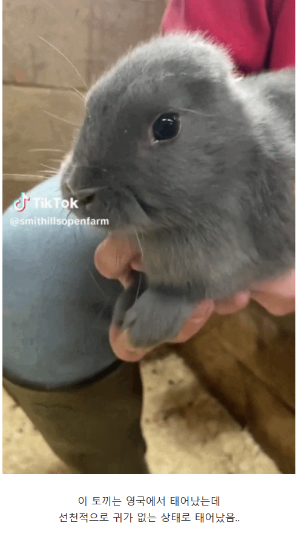
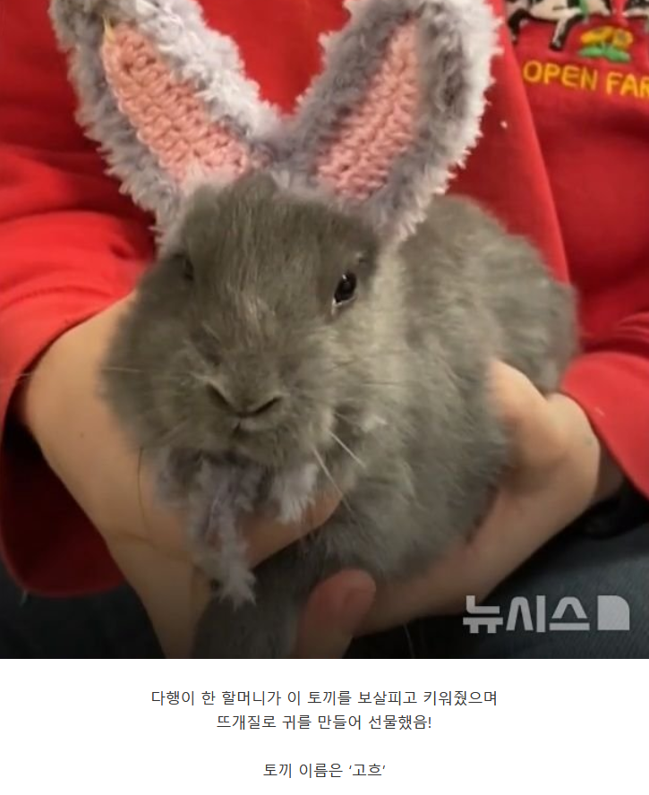

58 · 5 · 58 분 전 · 원문
https://cafe.daum.net/subdued20club/ReHf/5763069?svc=cafeapi


수집 당시 댓글 5개
ㄴㅉ · 1 시간 전
찰진고양이 · 59 분 전
빠르다바선생 · 56 분 전
ㅈㄴ 귀없네
아청법위헌 · 11 분 전
이름 잘 지었네 ㅋㅋㅋㅋㅋㅋ
밤귀신 · 9 분 전
자살할것 같은 이름이군
댓글
수집 당시 댓글 5개
ㄴㅉ · 1 시간 전
찰진고양이 · 59 분 전
빠르다바선생 · 56 분 전
ㅈㄴ 귀없네
아청법위헌 · 11 분 전
이름 잘 지었네 ㅋㅋㅋㅋㅋㅋ
밤귀신 · 9 분 전
자살할것 같은 이름이군